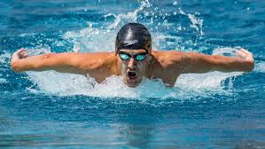
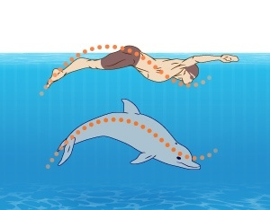

I first learned swimming starting with kicking my legs. I started in the small pool and I got better as time passed by, then came the BIG POOL. I practiced for days and days I learned many different strokes I mastered them and sort of started to teach others.THANK YOU.
My Favorites
Pretty much every stroke is my favorite.Freestyle is the simplest stroke.In dolphinstroke you have to wave like a dolphin.

Click here to view my strokes
My work
I have done lots of porgress on the way of learning swimming I learned every stroke there is back,back dolphin , butterfly , freestyle , dolphin. And thanks to swimming I never fail. THANK YOU.
My Inspiration
Michael Fred Phelps II[5] (born June 30, 1985)[6] is an American former competitive swimmer and the most successful and most decorated Olympian of all time,[7] with a total of 28 medals.[8] Phelps also holds the all-time records for Olympic gold medals (23),[9] Olympic gold medals in individual events (13), and Olympic medals in individual events (16).[10] When he won eight gold medals at the 2008 Beijing Games, Phelps broke fellow American swimmer Mark Spitz's 1972 record of seven first-place finishes at any single Olympic Games. At the 2004 Summer Olympics in Athens, Phelps had already tied the record of eight medals of any color at a single Games by winning six gold and two bronze medals. At the 2012 Summer Olympics in London, Phelps won four gold and two silver medals, and at the 2016 Summer Olympics in Rio de Janeiro, he won five gold medals and one silver. This made him the most successful athlete of the Games for the fourth Olympics in a row.
.png)
 Michael Fred Phelps II[5] (born June 30, 1985)[6] is an American former competitive swimmer and the most successful and most decorated Olympian of all time,[7] with a total of 28 medals.[8] Phelps also holds the all-time records for Olympic gold medals (23),[9] Olympic gold medals in individual events (13), and Olympic medals in individual events (16).[10] When he won eight gold medals at the 2008 Beijing Games, Phelps broke fellow American swimmer Mark Spitz's 1972 record of seven first-place finishes at any single Olympic Games. At the 2004 Summer Olympics in Athens, Phelps had already tied the record of eight medals of any color at a single Games by winning six gold and two bronze medals. At the 2012 Summer Olympics in London, Phelps won four gold and two silver medals, and at the 2016 Summer Olympics in Rio de Janeiro, he won five gold medals and one silver. This made him the most successful athlete of the Games for the fourth Olympics in a row.
Michael Fred Phelps II[5] (born June 30, 1985)[6] is an American former competitive swimmer and the most successful and most decorated Olympian of all time,[7] with a total of 28 medals.[8] Phelps also holds the all-time records for Olympic gold medals (23),[9] Olympic gold medals in individual events (13), and Olympic medals in individual events (16).[10] When he won eight gold medals at the 2008 Beijing Games, Phelps broke fellow American swimmer Mark Spitz's 1972 record of seven first-place finishes at any single Olympic Games. At the 2004 Summer Olympics in Athens, Phelps had already tied the record of eight medals of any color at a single Games by winning six gold and two bronze medals. At the 2012 Summer Olympics in London, Phelps won four gold and two silver medals, and at the 2016 Summer Olympics in Rio de Janeiro, he won five gold medals and one silver. This made him the most successful athlete of the Games for the fourth Olympics in a row.